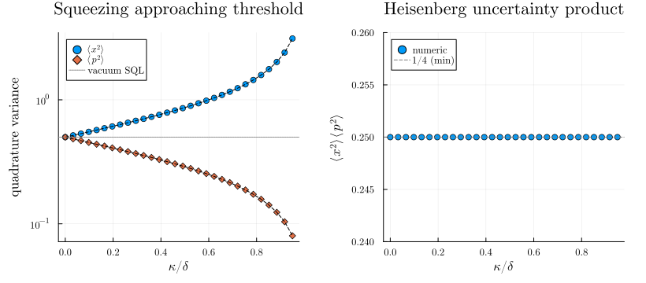
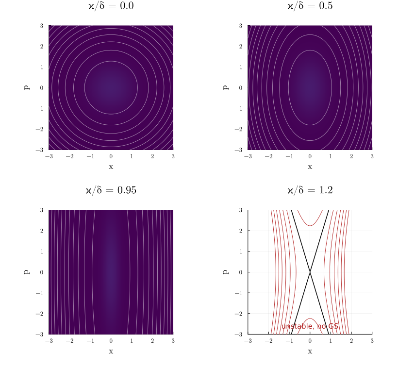

Parametric Oscillator in the Phase-Space Representation
The degenerate parametric oscillator (DPO), a single bosonic mode driven by parametric pumping at twice its frequency, is the workhorse of optical squeezing. In the rotating frame at half the pump frequency its effective Hamiltonian is
\[H = \delta\,\bigl(\tfrac{x^2 + p^2}{2}\bigr) - \tfrac{\kappa}{2}\,(x^2 - p^2) = \tfrac{\delta - \kappa}{2}\,x^2 + \tfrac{\delta + \kappa}{2}\,p^2,\]
where $\delta$ is the detuning from half the pump, $\kappa$ is the parametric drive strength, and $[x, p] = i$ are canonical quadrature operators. Below the threshold $\kappa = \delta$ the oscillator is stable but its ground state is squeezed: one quadrature variance drops below $\tfrac{1}{2}$ while the other grows above it, with the product saturating the Heisenberg bound.
This example showcases the PhaseSpace hilbert space, the canonical-commutator engine, and the squeeze transformation of a quadrature pair: every step uses Position and Momentum directly, without ever invoking Fock ladder operators.
Setup
using SecondQuantizedAlgebrahp = PhaseSpace(:osc)@qnumbers x::Position(hp) p::Momentum(hp)@variables δ κ2-element Vector{Symbolics.Num}:
δ
κBuilt-in canonical commutator:
commutator(x, p)imHamiltonian and Heisenberg dynamics
H = (δ - κ) / 2 * x^2 + (δ + κ) / 2 * p^2-1im * commutator(x, H)(δ + κ) * p-1im * commutator(p, H)(-δ + κ) * xReading off,
\[\dot x = (\delta + \kappa)\,p, \qquad \dot p = -(\delta - \kappa)\,x.\]
Combining, $\ddot x = -(\delta^2 - \kappa^2)\,x$: oscillation at normal-mode frequency $\varepsilon = \sqrt{\delta^2 - \kappa^2}$, which softens to zero at the parametric instability threshold $\kappa = \delta$. Above threshold the system runs away exponentially, and the squeezing parameter diverges.
Squeezed-state variances from a squeeze transformation
Below threshold, the ground state is a single-mode squeezed vacuum. Rather than mapping to ladder operators and quoting the Bogoliubov result, we can build the squeeze that diagonalises $H$ directly on the canonical pair: Squeeze on a (Position, Momentum) pair is $e^{-i r (x p + p x)/2}$, which stretches one quadrature and shrinks the other.
@variables rU = Squeeze(x, p, r)conjugate(x, U), conjugate(p, U)(exp(r) * x, (1 / exp(r)) * p)Conjugating $H$ rescales the two coefficients in opposite directions:
conjugate(H, U)((1//2)*(exp(r)^2)*δ - (1//2)*(exp(r)^2)*κ) * x * x + (((1//2)*δ) / (exp(r)^2) + ((1//2)*κ) / (exp(r)^2)) * p * pThe two agree when $e^{4r} = (\delta + \kappa)/(\delta - \kappa)$, leaving a bare oscillator $\tfrac{\varepsilon}{2}(x^2 + p^2)$ at the normal-mode frequency $\varepsilon = \sqrt{\delta^2 - \kappa^2}$ found above. Its ground state is the vacuum, so the ground state of $H$ is $U|0\rangle$ and the variances follow from conjugating the observables:
conjugate(x * x, U), conjugate(p * p, U)(exp(r)^2 * x * x, (1 / (exp(r)^2)) * p * p)With $\langle x^2\rangle_\mathrm{vac} = \langle p^2\rangle_\mathrm{vac} = \tfrac{1}{2}$ and $e^{2r} = \sqrt{(\delta + \kappa)/(\delta - \kappa)}$:
\[\langle x^2 \rangle_0 = \tfrac{1}{2}\sqrt{\dfrac{\delta + \kappa}{\delta - \kappa}}, \qquad \langle p^2 \rangle_0 = \tfrac{1}{2}\sqrt{\dfrac{\delta - \kappa}{\delta + \kappa}}, \qquad \langle x^2 \rangle_0\,\langle p^2 \rangle_0 = \tfrac{1}{4}.\]
The first variance grows without bound as $\kappa \to \delta^-$ (anti-squeezed quadrature), the second shrinks to zero (squeezed quadrature), and the product stays pinned at the Heisenberg-uncertainty minimum because the squeeze preserves the canonical quadrature pair.
Numerical verification
The package's numerical backend maps Position and Momentum onto a Fock basis via $x = (a + a^\dagger)/\sqrt 2$, $p = i(a^\dagger - a)/\sqrt 2$. We diagonalise $H$ on a wide Fock basis and read off the ground-state variances directly.
using QuantumOpticsBase, LinearAlgebra, Plots, LaTeXStringsgr()δ_val = 1.0n_max = 60b_fock = FockBasis(n_max)κs = range(0.0, 0.95 * δ_val, length = 30)var_x = Float64[]var_p = Float64[]for κ_val in κs subs = Dict(δ => δ_val, κ => κ_val) H_op = dense(to_numeric(substitute(H, subs), b_fock)) F = eigen(Hermitian(H_op.data)) ψ = Ket(b_fock, F.vectors[:, 1]) push!(var_x, real(numeric_average(x * x, ψ))) push!(var_p, real(numeric_average(p * p, ψ)))endth_x(κ_val) = 0.5 * sqrt((δ_val + κ_val) / (δ_val - κ_val))th_p(κ_val) = 0.5 * sqrt((δ_val - κ_val) / (δ_val + κ_val))fig = plot(; layout = (1, 2), size = (820, 360), margin = 5Plots.mm)scatter!(fig[1], collect(κs) ./ δ_val, var_x; label = L"\langle x^2 \rangle", marker = :circle)scatter!(fig[1], collect(κs) ./ δ_val, var_p; label = L"\langle p^2 \rangle", marker = :diamond)plot!(fig[1], collect(κs) ./ δ_val, th_x.(κs); linestyle = :dash, color = :black, label = false)plot!(fig[1], collect(κs) ./ δ_val, th_p.(κs); linestyle = :dash, color = :black, label = false)hline!(fig[1], [0.5]; color = :gray, linestyle = :dot, label = "vacuum SQL")plot!(fig[1]; xlabel = L"\kappa / \delta", ylabel = "quadrature variance", title = "Squeezing approaching threshold", yscale = :log10, legend = :topleft)scatter!(fig[2], collect(κs) ./ δ_val, var_x .* var_p; label = "numeric")hline!(fig[2], [0.25]; color = :gray, linestyle = :dash, label = "1/4 (min)")plot!(fig[2]; xlabel = L"\kappa / \delta", ylabel = L"\langle x^2 \rangle\,\langle p^2 \rangle", title = "Heisenberg uncertainty product", ylims = (0.24, 0.26), legend = :topleft)fig
Both quadrature variances follow their closed-form predictions across the entire below-threshold range, and the uncertainty product (right) sits precisely at the Heisenberg-minimum $\tfrac{1}{4}$ throughout, so the DPO ground state is a minimum-uncertainty squeezed vacuum. As $\kappa$ approaches $\delta$, $\langle x^2\rangle$ diverges while $\langle p^2\rangle$ collapses toward zero, the dynamical signature of the parametric instability.
Phase-space portrait
All of the above is summarised cleanly in a single picture. The classical phase portrait of the rotated-frame Hamiltonian is the family of level curves $H(x, p) = \mathrm{const}$, an ellipse below threshold that elongates along the squeezed axis as $\kappa \to \delta$. Crossing threshold the coefficient $(\delta - \kappa)/2$ of $x^2$ flips sign, and the level curves become hyperbolas: bounded orbits give way to unbounded exponential trajectories. The symbolic determinant computed earlier makes this transition exact:
\[\mathrm{eig}(M) = \pm\sqrt{-\det M} = \pm\sqrt{\kappa^2 - \delta^2} = \begin{cases} \pm i\,\sqrt{\delta^2 - \kappa^2} & \text{(oscillation, } \kappa < \delta\text{)}, \\ 0 & \text{(degenerate, } \kappa = \delta\text{)}, \\ \pm\sqrt{\kappa^2 - \delta^2} & \text{(exponential, } \kappa > \delta\text{)}. \end{cases}\]
Below threshold the ground-state Wigner function of the minimum-uncertainty squeezed vacuum is the Gaussian whose covariance matrix matches the analytic variances:
\[W(x, p) = \frac{2}{\pi}\, \exp\!\left[-\frac{x^2}{2\,\langle x^2\rangle_0} - \frac{p^2}{2\,\langle p^2\rangle_0}\right], \qquad \langle x^2\rangle_0 \langle p^2\rangle_0 = \tfrac{1}{4}.\]
Overlaying both objects in a four-panel sweep across the transition makes the squeezing and the instability immediately visible:
H_class(x_val, p_val, κ_val) = (δ_val - κ_val) / 2 * x_val^2 + (δ_val + κ_val) / 2 * p_val^2W_gs(x_val, p_val, κ_val) = (2 / π) * exp( -x_val^2 / (2 * th_x(κ_val)) - p_val^2 / (2 * th_p(κ_val)),)κs_show = [0.0, 0.5, 0.95, 1.2]xs_plot = -3:0.04:3ps_plot = -3:0.04:3fig2 = plot(; layout = (2, 2), size = (820, 760), margin = 5Plots.mm)for (i, κ_val) in enumerate(κs_show) row, col = ((i - 1) ÷ 2) + 1, ((i - 1) % 2) + 1 subplot = fig2[(row - 1) * 2 + col] H_grid = [H_class(xv, pv, κ_val) for xv in xs_plot, pv in ps_plot] if κ_val < δ_val W_grid = [W_gs(xv, pv, κ_val) for xv in xs_plot, pv in ps_plot] heatmap!(subplot, xs_plot, ps_plot, W_grid; color = :viridis, label = false) contour!(subplot, xs_plot, ps_plot, H_grid; levels = 10, color = :white, alpha = 0.6, linewidth = 0.8, colorbar = false, label = false) else contour!(subplot, xs_plot, ps_plot, H_grid; levels = vcat(-3:0.5:-0.5, 0.5:0.5:3), color = :firebrick, linewidth = 0.9, colorbar = false, label = false) contour!(subplot, xs_plot, ps_plot, H_grid; levels = [0.0], color = :black, linewidth = 1.5, colorbar = false, label = false) annotate!(subplot, 0, -2.6, text("unstable, no GS", :firebrick, 10)) end plot!(subplot; aspect_ratio = :equal, xlabel = "x", ylabel = "p", title = "κ/δ = $(κ_val)", xlims = (-3, 3), ylims = (-3, 3), legend = false)endfig2
Top-left ($\kappa = 0$): vacuum, circular Wigner blob, circular orbits. Top-right and bottom-left: the Wigner ellipse squeezes along $p$ and stretches along $x$ as $\kappa$ climbs toward $\delta$, with the classical orbits doing the same. Bottom-right (above threshold): the saddle separatrix $H = 0$ (black) splits phase space into four hyperbolic sectors; the orbits run off to infinity along the unstable manifold. Everything in this figure (the threshold condition, the variances, the Wigner shape) came out of a canonical Position/Momentum pair, the built-in commutator engine and one Squeeze, with no manual translation to ladder operators required.
This page was generated using Literate.jl.